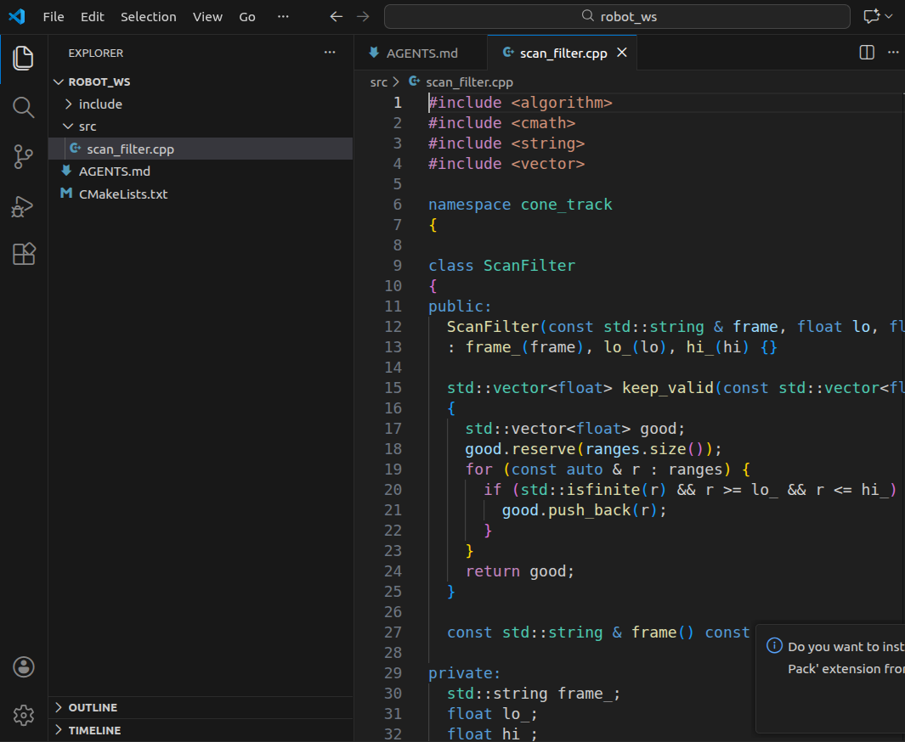
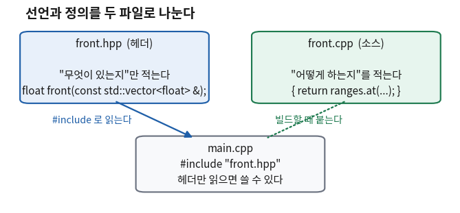

코드를 읽기 위한 최소 장비
- ROS 2 예제를 열면 보이는
::,->,&,<>는 각각 무엇인가? - 타입을 안 적고
auto라고만 써도 되는 이유는 무엇인가? - 왜 파일이
.hpp와.cpp두 개로 나뉘어 있나? - AI가 준 C++ 코드를 보고 "여기가 이상하다"고 말하려면 최소한 무엇을 알아야 하나?
오늘은 문법 수업이 아니라 읽기 연습이다. 이 강의는 학생이 C++ 코드를 처음부터 짜기를 요구하지 않는다. 코드는 에이전트가 짠다. 학생이 하는 일은 받은 코드를 읽고 판단하는 것이다.
그런데 읽으려면 최소한의 장비가 필요하다.
const std::vector<float> & ranges라는 한 조각에 기호가 넷 들어 있는데,
그중 하나라도 모르면 학생은 그 줄에서 읽기를 멈춘다.
멈추면 그 아래 스무 줄이 통째로 안 읽힌다.
그래서 오늘은 기호 여덟 개만 다룬다. 각각을 완전히 이해하는 것이 목표가 아니다. "이건 무슨 기호구나"라고 알아보는 것까지가 오늘의 목표다. 깊은 이야기는 그 기호가 실제로 문제를 일으키는 회차에서 다시 한다.
한 장 요약 — 학기가 끝나도 이 표만 남으면 된다
무엇을 먼저 볼지: 맨 오른쪽 「이것만 알면 된다」 열만 읽어도 오늘 수업은 끝난다. 가운데 열은 그것을 코드에서 알아보는 법이다.
| 기호 | 코드에서 이렇게 보인다 | 이것만 알면 된다 | 수준 |
|---|---|---|---|
auto |
auto n = scan.ranges.size(); |
타입을 컴파일러가 대신 채운다. 오른쪽을 보면 무엇인지 안다 | [알아보기] |
& (참조) |
void f(const Scan & s) |
원본을 가리킨다. 복사가 아니다. 이 한 글자가 있고 없고가 속도를 가른다 | [알아보기] |
const |
const float f = ...; |
못 바꾼다는 약속. 어기면 컴파일이 안 된다 | [알아보기] |
:: |
std::vector, lidar::Scan |
앞에 붙은 것이 소속이다. std는 표준, 나머지는 누가 만든 것 |
[알아보기] |
<> |
std::vector<float> |
꺾쇠 안은 "무슨 타입으로"다. 그릇은 같고 담는 것이 다르다 | [알아보기] |
. 와 -> |
scan.frame / p->frame |
점은 물건, 화살표는 물건이 있는 자리. 하는 일은 같다 | [알아보기] |
nullptr |
Scan * p = nullptr; |
아무것도 안 가리킴. 이 상태에서 ->를 쓰면 프로그램이 죽는다 |
[알아보기] |
#include |
#include <vector> |
남이 쓴 선언을 그 자리에 붙인다. 없으면 이름을 못 알아본다 | [알아보기] |
&)만 색이 다르다고 생각하면 된다.
나머지 일곱은 "알아보면 끝"이지만, &는 있고 없고에 따라 프로그램이 실제로 하는 일이 달라진다.
이 강의에서 AI 코드를 고치는 일의 절반이 이 한 글자를 넣는 일이다.
깊은 이야기는 11회에서 실제 시간을 재면서 한다.
① 이 화면 한 장에 오늘 배울 기호가 전부 들어 있다 🟢 맡긴다
아래는 VS Code에 C++ 파일 하나를 열어 둔 화면이다. 따로 고른 화면이 아니라 이 과목에서 흔히 만나게 될 모양이다. 오늘 배울 여덟 개 중 일곱 개가 이 한 화면 안에 있다.

#include 네 개.
6줄 namespace cone_track (여기 만드는 이름들의 소속).
9줄 class ScanFilter.
12줄 const std::string & frame — 한 조각에 const·::·& 세 개가 같이 있다.
13줄 콜론으로 시작하는 줄(: frame_(frame), lo_(lo), hi_(hi)) — 8회에서 다루는 「멤버 초기화 리스트」다.
15줄 std::vector<float> — 꺾쇠.
19줄 const auto & r — const와 auto와 &가 한 줄에.
29줄 private:.
이 화면이 안 읽히는 이유는 문법이 어려워서가 아니다.
기호가 셋씩 붙어 나오기 때문이다.
const std::string & frame은 사실 세 조각을 이어 붙인 것이다 —
"안 바꾼다"(const) + "표준 문자열"(std::string) + "원본을 가리킨다"(&).
조각으로 끊어 읽는 법을 익히면 그 줄이 읽힌다. 오늘 하는 일이 그것이다.
② 오늘은 파일 하나를 여덟 조각으로 끊어 읽는다 🟡 맡기되 검사
기호를 설명만 하면 남지 않는다. 그래서 여덟 개가 전부 들어 있고 실제로 돌아가는 파일 하나를 준비했다.
read_kit.cpp다. 이 파일을 절마다 잘라 읽고, 각 절 끝에 그 부분이 실제로 찍은 출력을 붙인다.
먼저 파일 맨 위, 데이터를 담는 그릇을 만드는 부분이다.
// 7회 — 코드를 읽기 위한 최소 장비
#include <iostream> // std::cout — 화면에 찍는 도구
#include <string> // std::string
#include <vector> // std::vector
namespace lidar { // :: 이름을 담는 상자를 만든다
struct Scan { // 거리 값 묶음 하나
std::string frame; // 이 값이 어느 좌표계에서 잰 것인가
std::vector<float> ranges; // <> "무슨 타입을 담는 vector인지"
float front() const { return ranges.at(0); } // const 이 함수는 상태를 안 바꾼다
};
}🆕 이 코드에서 처음 나오는 것
- struct Scan { ... };
- 값 여러 개를 하나로 묶은 덩어리를 만든다. 여기서는 좌표계 이름과 거리 배열을 묶어 "스캔 한 번"으로 만들었다. 맨 뒤 세미콜론을 빠뜨리면 컴파일이 안 된다.
- std::string
- 글자를 담는 표준 그릇이다. 여기서는 좌표계 이름
"base_scan"을 담았다. - std::vector<float> ranges
- 실수를 여러 개 담고 개수가 늘었다 줄었다 하는 그릇이다. 여기서는 라이다가 잰 거리 값들을 담았다.
- ranges.at(0)
- 그릇의 0번째 값을 꺼낸다. C++은 첫 칸이 0번이다.
ranges[0]으로도 꺼낼 수 있는데,.at()은 없는 칸을 꺼내려 하면 그 자리에서 오류를 낸다.[]는 아무 말 없이 엉뚱한 값을 준다.
제대로 다루는 곳: 8회(클래스) · 12회(std::vector와 컨테이너)
③ auto는 타입을 안 적어도 되는 자리다 🟢 맡긴다
언제 이게 필요해지나
C++은 변수를 만들 때 타입을 적어야 하는 언어다. int n = 3;처럼.
그런데 적어야 할 타입 이름이 감당이 안 되게 길어지는 일이 자주 생긴다.
그릇의 크기를 물었을 때 돌아오는 값의 타입 이름이 std::vector<float>::size_type이다.
std::cout << "① auto — 타입을 컴파일러가 채운다\n";
auto n = scan.ranges.size(); // auto 가 없으면 std::vector<float>::size_type
std::cout << " ranges 개수 = " << n << "\n";🆕 이 코드에서 처음 나오는 것
- std::cout << 값 << 값;
- 화면에 찍는다. 화살표 두 개(
<<)를 계속 이어 붙이면 왼쪽부터 순서대로 찍힌다. 여기서는 설명 문장과 숫자를 한 줄에 이어 찍는 데 썼다. - "\n"
- 줄바꿈이다. 역슬래시와
n두 글자가 합쳐서 엔터 한 번을 뜻한다. - scan.ranges.size()
- 그릇에 값이 몇 개 들어 있는지 묻는다. 여기서는 스캔 하나에 거리 값이 몇 개인지 세는 데 썼다.
실제로 나온 출력
① auto — 타입을 컴파일러가 채운다
ranges 개수 = 3이것만 알면 된다
auto는 "타입을 여기에 안 적겠다"는 뜻이고, 컴파일러가 오른쪽을 보고 채운다.
파이썬처럼 실행 중에 타입이 바뀌는 것이 아니다.
타입은 컴파일할 때 정해지고, 그 뒤로는 절대 안 바뀐다.
적는 사람이 컴파일러로 바뀐 것뿐이다.
무엇을 먼저 볼지: 가운데 열이 판단 기준이다.
| 이럴 때 | auto를 쓰나 | 왜 |
|---|---|---|
| 타입 이름이 길거나 외우기 어려울 때 | 쓴다 | 사람이 적으면 틀린다. 컴파일러는 안 틀린다 |
| 오른쪽만 봐도 무엇인지 뻔할 때 | 쓴다 | auto it = ranges.begin(); — 두 번 쓸 이유가 없다 |
| 읽는 사람이 타입을 꼭 알아야 할 때 | 안 쓴다 | auto x = f();만 있으면 x가 무엇인지 알 길이 없다 |
float인지 double인지가 중요할 때 | 안 쓴다 | 라이다 거리처럼 정밀도가 걸린 값은 명시하는 편이 안전하다 |
auto는 타이핑을 줄이려고 쓰는 것이 아니다.
사람이 타입을 손으로 적다가 조금 다른 타입을 적으면 그 자리에서 조용히 복사가 한 번 일어난다.
auto는 그 실수를 원천적으로 없앤다. 11회에서 그 복사가 얼마짜리인지 재 본다.
④ & 한 글자가 복사 한 번을 없앤다 🔴 사람이 한다
언제 이게 필요해지나
함수에 값을 넘길 때 C++은 기본적으로 통째로 복사해서 넘긴다.
int 하나면 아무 문제가 없다. 그런데 넘기는 것이 거리 값 360개가 든 스캔이면 이야기가 달라진다.
함수를 부를 때마다 360개가 새로 만들어진다.
아래 두 함수는 하는 일이 똑같다. 다른 것은 인자 앞의 const와 &뿐이다.
// & 없이 받는다 → 통째로 복사된다
void print_copy(lidar::Scan s) { std::cout << " 값으로 받음 : " << s.frame << "\n"; }// const & 로 받는다 → 원본을 보기만 한다. 복사가 없다
void print_ref(const lidar::Scan & s) { std::cout << " 참조로 받음 : " << s.frame << "\n"; } std::cout << "② & — 원본을 가리킨다. 복사가 아니다\n";
print_copy(scan);
print_ref(scan);실제로 나온 출력
② & — 원본을 가리킨다. 복사가 아니다
값으로 받음 : base_scan
참조로 받음 : base_scan
두 함수의 출력이 글자 하나 다르지 않다.
&를 빼도 프로그램은 잘 돌고, 답도 맞고, 컴파일러도 아무 말을 안 한다.
다른 것은 눈에 안 보이는 곳에서 일어난다. 위쪽 함수는 부를 때마다 스캔을 통째로 하나 더 만들고, 함수가 끝나면 버린다. 아래쪽은 아무것도 안 만든다.
그래서 이 실수는 테스트로 안 잡힌다.
사람이 코드를 읽어야만 잡힌다. 6회에서 본 「AI 코드의 복사 오버헤드 1.39배」가 바로 이 자리다.
실습에서 &를 직접 지워 보고 출력이 같은 것을 눈으로 확인한다.
무엇을 먼저 볼지: 첫 줄이 기본값이다. 고민되면 첫 줄을 고른다.
| 이렇게 받는다 | 무슨 뜻인가 | 언제 |
|---|---|---|
const T & x | 원본을 보되 안 바꾼다 | 기본값. 읽기만 할 때 |
T & x | 원본을 보고 바꾼다 | 함수가 원본을 고쳐야 할 때 |
T x | 사본을 받는다 | int·float처럼 작은 값일 때. 또는 어차피 사본이 필요할 때 |
std::string·std::vector·메시지 타입은 전부 여기 해당한다.
반대로 int를 const int &로 받는 것은 오히려 손해다.
자세한 것은 11회에서 시간을 재면서 다룬다. 지금은 모양을 알아보는 것까지면 된다.
⑤ const는 컴파일러에게 하는 약속이다 🟡 맡기되 검사
언제 이게 필요해지나
큰 프로그램에서 가장 찾기 어려운 버그는 "어디선가 이 값이 바뀌었다"는 종류다.
값이 바뀐 자리를 찾으려면 코드 전체를 뒤져야 한다.
const는 그 뒤짐을 컴파일러에게 넘기는 장치다.
std::cout << "③ const — 못 바꾼다는 약속\n";
const float f = scan.front();
std::cout << " 정면 거리 = " << f << " m (f 에는 이제 대입할 수 없다)\n";실제로 나온 출력
③ const — 못 바꾼다는 약속
정면 거리 = 0.83 m (f 에는 이제 대입할 수 없다)이것만 알면 된다
const가 붙은 것은 바꿀 수 없다. 바꾸려고 하면 실행 전에 컴파일러가 막는다.
실행해 봐야 아는 버그가 컴파일 단계의 오류로 앞당겨지는 것이 이 키워드의 값어치다.
const는 붙는 자리가 세 군데다. 오늘은 세 군데 모두 "알아보는 것"까지만 한다.
무엇을 먼저 볼지: 가운데 열의 위치가 뜻을 정한다.
| 어디에 붙었나 | 모양 | 무슨 뜻인가 |
|---|---|---|
| 변수 앞 | const float f = ...; | 이 변수는 다시 대입할 수 없다 |
| 함수 인자 앞 | void g(const Scan & s) | 이 함수는 넘겨받은 것을 안 바꾼다 |
| 함수 이름 뒤 | float front() const | 이 함수는 자기가 속한 덩어리의 값을 안 바꾼다 |
const인데 뒤에 붙었다.
read_kit.cpp의 float front() const가 그것이고,
"이 함수를 불러도 스캔의 내용은 안 변한다"는 약속이다.
이 약속 덕분에 바꾸면 안 되는 스캔에서도 이 함수는 부를 수 있다.
깊은 이야기는 14회에서 한다. 오늘은 "함수 뒤에 붙은 const도 있다"는 것만 알면 된다.
⑥ std::vector<float> 한 조각에 기호가 둘 들어 있다 🟢 맡긴다
언제 이게 필요해지나
프로그램이 커지면 이름이 겹친다. 표준 라이브러리에도 Node가 있고 ROS 2에도 Node가 있고 내 코드에도 Node가 있을 수 있다.
어느 Node인지를 밝히는 장치가 ::다.
std::cout << "④ :: — 이름이 어느 소속인가\n";
std::cout << " lidar::Scan 은 우리가 만든 것, std::vector 는 표준 것\n";④ :: — 이름이 어느 소속인가
lidar::Scan 은 우리가 만든 것, std::vector 는 표준 것
앞에서 본 namespace lidar { ... }가 이름을 담는 상자를 만드는 문장이다.
그 상자 안에 만든 것은 밖에서 lidar::Scan이라고 불러야 한다.
무엇을 먼저 볼지: 왼쪽 열의 앞부분만 보면 그것이 누구 것인지 안다.
| 이렇게 보이면 | 소속 | 알아두면 좋은 것 |
|---|---|---|
std::vector, std::string, std::cout | C++ 표준 | 가장 많이 보게 된다. 믿고 써도 되는 것들이다 |
rclcpp::Node, sensor_msgs::msg::LaserScan | ROS 2 | 3부에서 계속 만난다. ::가 두 번 나오기도 한다 |
lidar::Scan, cone_track::ScanFilter | 우리가 만든 것 | 이름이 낯설면 대개 이쪽이다. 프로젝트 안에서 찾으면 나온다 |
앞에 아무것도 없음 — main, print_ref | 어디에도 안 넣은 것 | 작은 프로그램은 이래도 된다. 커지면 이름이 부딪친다 |
꺾쇠 안은 "무슨 타입으로"다
std::vector는 "여러 개 담는 그릇"이라는 설계도이지 그릇 자체가 아니다.
무엇을 담을지를 정해 줘야 실제 그릇이 된다. 그 자리가 꺾쇠 안이다.
std::cout << "⑥ <> — 꺾쇠 안은 \"무슨 타입으로\"\n";
std::vector<std::string> names{"base_link", "base_scan"};
std::cout << " vector<string> 첫 칸 = " << names.at(0) << "\n";⑥ <> — 꺾쇠 안은 "무슨 타입으로"
vector<string> 첫 칸 = base_link| 이렇게 쓰면 | 무엇이 되나 |
|---|---|
std::vector<float> | 실수를 담는 그릇 — 라이다 거리 값 |
std::vector<std::string> | 글자를 담는 그릇 — 좌표계 이름 목록 |
std::vector<std::vector<float>> | 그릇을 담는 그릇 — 여러 스캔을 모아 둔 것 |
⑦ 점과 화살표는 같은 것을 다르게 쓴 것이다 🟡 맡기되 검사
언제 이게 필요해지나
ROS 2 코드를 열면 msg->ranges처럼 화살표가 계속 나온다.
그런데 어떤 자리에서는 scan.ranges처럼 점이다.
둘의 차이를 모르면 코드를 고칠 때마다 컴파일 오류를 만난다.
std::cout << "⑤ . 과 -> — 점은 객체, 화살표는 포인터\n";
lidar::Scan * p = &scan; // p 는 scan 이 있는 자리를 가리킨다
std::cout << " scan.frame = " << scan.frame << "\n";
std::cout << " p->frame = " << p->frame << " (같은 것을 다르게 쓴 것)\n";🆕 이 코드에서 처음 나오는 것
- lidar::Scan * p
- 타입 뒤의
*는 "그 물건이 있는 자리를 담는 변수"라는 뜻이다(포인터). 물건 자체가 아니라 주소를 담는다. 여기서는scan이 어디 있는지를p에 담았다. - &scan
- 여기서의
&는 앞 절의&와 다른 뜻이다. 변수 앞에 붙으면 "그 변수가 있는 자리(주소)를 달라"는 뜻이다. 타입 옆에 붙었을 때만 「참조」다. 붙은 자리를 봐야 뜻이 갈린다. - p->frame
- "그 자리에 가서
frame을 꺼내라"는 뜻이다.(*p).frame이라고 써도 같은데, 너무 자주 쓰다 보니 짧은 표기가 생겼다.
제대로 다루는 곳: 12회(스마트 포인터 — ROS 2 콜백 인자가 전부 이것이다)
실제로 나온 출력
⑤ . 과 -> — 점은 객체, 화살표는 포인터
scan.frame = base_scan
p->frame = base_scan (같은 것을 다르게 쓴 것)두 줄의 값이 같다. 같은 스캔을 두 가지 방법으로 읽은 것이기 때문이다. 점이냐 화살표냐는 "무엇을 손에 들고 있느냐"에 따라 정해진다 — 물건을 들고 있으면 점, 물건이 있는 자리를 들고 있으면 화살표다.
아무것도 안 가리키는 상태 — nullptr
자리를 담는 변수는 "아직 아무 자리도 안 정했다"는 상태가 될 수 있다.
그 상태를 나타내는 값이 nullptr이다.
std::cout << "⑦ nullptr — 아무것도 안 가리킴\n";
lidar::Scan * empty = nullptr;
std::cout << " empty 가 비었나? " << (empty == nullptr ? "그렇다" : "아니다") << "\n";⑦ nullptr — 아무것도 안 가리킴
empty 가 비었나? 그렇다nullptr에 화살표를 쓰면 프로그램이 그 자리에서 죽는다
empty->frame이라고 쓰면 "아무 데도 아닌 자리에 가서 값을 꺼내라"는 말이 된다.
컴파일은 된다. 실행 중에 죽는다.
그래서 자리를 담는 변수를 쓰기 전에는 비었는지 먼저 확인하는 것이 습관이다.
ROS 2 코드에서 if (!msg) { return; } 같은 줄이 콜백 맨 위에 있는 것이 그 이유다.
옛날 코드에서는 0이나 NULL을 썼다. 지금도 컴파일된다.
그런데 0은 숫자인지 빈 자리인지 코드만 봐서는 알 수 없다.
AI가 준 코드에 NULL이 보이면 오래된 코드를 흉내낸 것이다.
nullptr로 바꿔 달라고 하면 된다.
⑧ #include는 남이 쓴 선언을 그 자리에 붙인다 🟡 맡기되 검사
언제 이게 필요해지나
std::vector라는 이름을 쓰려면 컴파일러가 그 이름을 알아야 한다.
C++은 파일 하나를 위에서 아래로 읽으면서 컴파일한다.
읽는 도중에 모르는 이름이 나오면 그 자리에서 오류를 낸다.
#include <iostream> // std::cout — 화면에 찍는 도구
#include <string> // std::string
#include <vector> // std::vector⑧ #include — 선언을 가져다 붙인다
이 파일 맨 위 세 줄이 없으면 위 코드는 한 줄도 컴파일되지 않는다🆕 이 코드에서 처음 나오는 것
- #include <이름>
- 꺾쇠로 감싸면 시스템에 깔린 것을 찾는다. 표준 라이브러리와 남의 라이브러리가 여기 해당한다.
- #include "이름.hpp"
- 따옴표로 감싸면 내 프로젝트 안에서 먼저 찾는다. 내가 만든 헤더를 가져올 때 이 모양을 쓴다. 8회의 예제가 이것이다.
- 맨 앞의
# - 컴파일 전에 처리되는 줄이라는 표시다.
#include는 실행되는 명령이 아니라 그 자리에 파일 내용을 통째로 복사해 넣으라는 지시다. - #ifndef / #define / #endif
- 헤더 파일 맨 위아래를 감싸는 세 줄이다. 아래 ⑨절의 코드에도 나온다. "같은 헤더가 두 번 들어와도 한 번만 읽히게" 만드는 장치다. 지금은 헤더 파일에 늘 붙어 다니는 세 줄이라는 것만 알아 두면 된다.
제대로 다루는 곳: 8회(헤더와 소스 나누기 — 포함 보호)
그래서 파일이 두 개로 나뉜다
여기서 C++이 파이썬과 크게 다른 점이 하나 나온다. "무엇이 있는지"(선언)와 "어떻게 하는지"(정의)를 다른 파일에 나눠 적는다.

#include로 읽는다」(코드를 쓸 때),
오른쪽 화살표는 「빌드할 때 붙인다」(컴파일이 끝난 뒤)다.
서로 다른 단계에서 일어나는 일이다. 9회에서 이 두 단계를 나눠 본다.
무엇을 먼저 볼지: 왼쪽 열이 헤더, 오른쪽이 소스다. 헤더 쪽이 짧아야 정상이다.
헤더 (.hpp) — 무엇이 있는지 | 소스 (.cpp) — 어떻게 하는지 |
|---|---|
| 클래스에 무슨 함수가 있는지 | 그 함수가 실제로 무엇을 하는지 |
| 함수 이름과 인자 모양, 그리고 세미콜론 | 중괄호 안의 코드 전부 |
| 쓰는 쪽이 읽는다 | 빌드할 때만 쓰인다 |
| 고치면 이걸 쓰는 파일이 전부 다시 컴파일된다 | 고쳐도 이 파일만 다시 컴파일된다 |
⑨ AI가 헤더에서 하는 실수 두 가지 🔴 사람이 한다
실수 1 — 헤더에 함수의 내용까지 적는다
AI에게 "헤더 파일을 만들어 줘"라고 하면 중괄호 안의 코드까지 헤더에 넣는 일이 흔하다. 파일 하나짜리 프로그램에서는 잘 돌기 때문에 알아채기 어렵다.
// bad.hpp — 헤더에 함수의 「내용」까지 들어갔다
#ifndef BAD_HPP_
#define BAD_HPP_
float front(const float * r) { return r[0]; } // 선언이 아니라 정의다
#endif무엇이 문제인가
이 헤더를 소스 파일 두 개가 각각 #include하면
같은 함수가 두 벌 만들어진다. 그리고 빌드 마지막 단계에서 터진다.
아래는 실제로 그렇게 해서 나온 오류다.
$ g++ -std=c++17 a.cpp b.cpp -o x
/usr/bin/ld: /tmp/ccxhcUM5.o: in function `front(float const*)':
b.cpp:(.text+0x0): multiple definition of `front(float const*)';
/tmp/ccQgzmvJ.o:a.cpp:(.text+0x0): first defined here
collect2: error: ld returned 1 exit statusmultiple definition은 "같은 것이 두 번 정의됐다"는 말이다.
오류가 난 곳은 소스 파일인데 고칠 곳은 헤더다. 그래서 처음 만나면 한참 헤맨다.
ld라는 이름이 보이면 「빌드 마지막 단계(링크)에서 났다」는 신호다.
이 오류 읽는 법은 9회에서 세 단계로 나눠 정리한다.
이렇게 말하면 된다
.cpp로 옮겨 줘. 헤더에 남는 줄은 세미콜론으로 끝나야 해.
// good.hpp — 선언만. 세미콜론으로 끝난다
#ifndef GOOD_HPP_
#define GOOD_HPP_
float front(const float * r);
#endif
// good.cpp — 내용은 여기에
#include "good.hpp"
float front(const float * r) { return r[0]; }실수 2 — 안 쓰는 #include를 남긴다
코드를 여러 번 고치다 보면 더 이상 안 쓰는 헤더가 맨 위에 그대로 남는다. AI는 이것을 잘 지우지 않는다. 지워도 되는지 확신이 없기 때문이다.
#include <algorithm> // 안 쓴다
#include <iostream> // 쓴다
#include <map> // 안 쓴다
#include <memory> // 안 쓴다
#include <string> // 쓴다
#include <vector> // 쓴다무엇을 먼저 볼지: 오른쪽 열이 왜 이게 문제인지다.
| 무엇이 문제인가 | 왜 그런가 |
|---|---|
| 빌드가 느려진다 | #include는 파일 내용을 통째로 붙여 넣는 것이다. 안 쓰는 것도 매번 붙는다 |
| 이 코드가 무엇을 쓰는지 안 보인다 | 맨 위 목록은 "이 파일이 무엇에 기대고 있나"를 알려 주는 자리다. 거짓 정보가 섞이면 못 믿는다 |
| 지웠을 때 안 되는 경우가 있다 | 어떤 헤더는 다른 헤더를 대신 끌어와 준다. 그래서 그냥 지우면 갑자기 컴파일이 안 되기도 한다 |
이렇게 말하면 된다
#include만 남기고 나머지는 지워 줘. 지운 뒤에 컴파일이 되는지 확인하고, 안 되면 무엇 때문에 필요했는지 알려 줘.
마지막 문장이 중요하다. "지워 줘"만 말하면 지우고 끝난다. "확인하고"를 붙이면 컴파일까지 돌려 보고 답한다.
🧪 실습 — &를 지우면 출력이 달라질까 🟢 맡긴다
① 이걸 해 보면 무엇을 알게 되나
기호 여덟 개가 실제로 찍는 출력을 눈으로 본다.
그리고 & 한 글자를 지웠을 때 출력이 어떻게 달라지는지 확인한다.
이 실습의 결론은 "안 달라진다"이고, 그게 핵심이다.
② 준비물
- WSL 우분투 터미널 하나
- VS Code (WSL에 연결된 상태)
g++— 6회에서 이미 깔았다면 그대로 쓴다
③ 절차
-
(2분) 작업 폴더를 만들고 파일을 만든다.
VS Code에서mkdir -p ~/robot_ws/l07 cd ~/robot_ws/l07 code .read_kit.cpp를 새로 만든다. -
(3분) 이 자료의 코드 조각을 순서대로 붙여 넣는다.
②절부터 ⑧절까지의 코드 블록을 위에서부터 이어 붙이면 한 파일이 된다.
타이핑하지 않는다. 전체 파일이 필요하면 아래 프롬프트를 쓴다.
C++ 파일을 하나 만들어 줘.
namespace lidar안에Scan구조체(std::string frame,std::vector<float> ranges,float front() const)를 두고,main에서auto·참조·const·::·->·<>·nullptr을 하나씩 쓰면서 각각이 무엇인지 화면에 찍게 해 줘. C++17로 써 줘. -
(1분) 컴파일해서 돌린다.
g++ -std=c++17 -O2 -o read_kit read_kit.cpp ./read_kit - (2분) 출력이 아래 「④ 성공 화면」과 같은지 확인한다. 여덟 줄의 번호(①~⑧)가 다 나오면 된 것이다.
-
(3분)
print_ref에서&한 글자를 지운다.
저장하고 3단계를 다시 한다.// 고치기 전 void print_ref(const lidar::Scan & s) { ... } // 고친 뒤 — & 만 지웠다 void print_ref(const lidar::Scan s) { ... } - (3분) 무엇이 달라졌는지 적는다. 아래 표의 빈칸을 채운다.
-
(2분) 다시
&를 넣어 원래대로 되돌린다. 되돌린 뒤 한 번 더 컴파일해서 되는지 확인한다.
④ 이렇게 되면 성공이다
&가 있는 원래 파일을 돌리면 아래가 그대로 나온다.
① auto — 타입을 컴파일러가 채운다
ranges 개수 = 3
② & — 원본을 가리킨다. 복사가 아니다
값으로 받음 : base_scan
참조로 받음 : base_scan
③ const — 못 바꾼다는 약속
정면 거리 = 0.83 m (f 에는 이제 대입할 수 없다)
④ :: — 이름이 어느 소속인가
lidar::Scan 은 우리가 만든 것, std::vector 는 표준 것
⑤ . 과 -> — 점은 객체, 화살표는 포인터
scan.frame = base_scan
p->frame = base_scan (같은 것을 다르게 쓴 것)
⑥ <> — 꺾쇠 안은 "무슨 타입으로"
vector<string> 첫 칸 = base_link
⑦ nullptr — 아무것도 안 가리킴
empty 가 비었나? 그렇다
⑧ #include — 선언을 가져다 붙인다
이 파일 맨 위 세 줄이 없으면 위 코드는 한 줄도 컴파일되지 않는다⑤ 5단계에서 무엇이 달라졌나
| 확인할 것 | 내가 본 것 |
|---|---|
| 컴파일이 됐나 | 됐다 / 안 됐다 |
| 「참조로 받음」 줄의 글자가 달라졌나 | ________ |
| 다른 줄이 달라졌나 | ________ |
| 컴파일러가 경고를 냈나 | ________ |
-O2)
🤖 오늘 나온 프롬프트 모음 🟢 맡긴다
| 이럴 때 | 이렇게 말한다 |
|---|---|
| 모르는 기호를 만났을 때 | "이 줄을 조각으로 끊어서, 각 조각이 무슨 뜻인지 한 줄씩 설명해 줘. 문법 이름 말고 하는 일로 설명해 줘." |
| 헤더가 이상할 때 | "헤더에는 선언만 남기고 함수 본문은 .cpp로 옮겨 줘. 헤더에 남는 줄은 세미콜론으로 끝나야 해." |
#include가 많을 때 | "이 파일에서 실제로 쓰는 #include만 남기고 나머지는 지워 줘. 지운 뒤 컴파일이 되는지 확인해 줘." |
| 복사가 의심될 때 | "함수 인자 중에 값으로 받는 것이 있으면 const 참조로 바꿔 줘. 다만 int·float 같은 작은 값은 그대로 둬." |
| 옛날 문법이 보일 때 | "이 코드에 NULL이나 0으로 포인터를 비운 자리가 있으면 nullptr로 바꿔 줘." |
| 타입이 안 보일 때 | "auto로 쓴 변수들이 실제로 무슨 타입인지 주석으로 적어 줘. 코드는 그대로 둬." |
✅ 오늘의 점검
조금 더 알아두면 시험 범위 아님
using과 using namespace std; — 자주 보이지만 조심할 것
std::를 매번 적기 귀찮아서 생략하게 해 주는 문법이 있다. 두 가지 모양이다.
using std::cout; // ① 이 이름 하나만 std:: 없이 쓰겠다
using namespace std; // ② std 안의 이름을 전부 std:: 없이 쓰겠다
①은 괜찮고 ②는 조심해야 한다.
②를 쓰면 표준 라이브러리의 모든 이름이 그냥 굴러다니게 되고,
내가 만든 이름과 부딪치면 어느 것이 불렸는지 알 수 없는 상황이 생긴다.
count·distance·data처럼 흔한 이름이 표준에도 있다.
특히 헤더 파일에서는 둘 다 쓰지 않는다.
헤더를 읽는 모든 파일에 그 생략이 딸려 들어가기 때문이다.
AI가 준 헤더 맨 위에 using namespace std;가 보이면 지워 달라고 하면 된다.
using에는 긴 타입에 짧은 별명을 붙이는 용법도 있다.
ROS 2 코드에서 자주 보게 된다.
using LaserScan = sensor_msgs::msg::LaserScan; // 별명을 붙였다중괄호로 초기화하는 모양 — Scan scan{"base_scan", {0.83f, 0.85f, 1.20f}}
read_kit.cpp의 main 첫 줄이 이 모양이다.
중괄호 안에 값을 순서대로 나열하면 그대로 채워진다.
바깥 중괄호가 Scan을 채우고, 안쪽 중괄호가 ranges를 채운다.
lidar::Scan scan{"base_scan", {0.83f, 0.85f, 1.20f}};
옛날에는 소괄호 ()만 있었는데 C++11부터 중괄호도 쓸 수 있게 됐다.
중괄호 쪽에 이득이 하나 있다 — 값이 잘려 나가는 변환을 막아 준다.
int x{3.14};는 소수점이 잘리므로 컴파일러가 거부한다.
int x(3.14);는 아무 말 없이 3이 된다.
그래서 값을 채울 때는 중괄호가 조금 더 안전하다.
다만 std::vector에서는 v(5)(칸 5개)와 v{5}(값 5 하나)가 다른 뜻이 되니
그릇을 만들 때는 소괄호와 중괄호를 헷갈리지 않게 쓴다.
auto가 참조와 const를 안 물려받는다는 것
auto는 오른쪽의 타입을 그대로 가져오지 않는다.
const와 &는 떼어 버리고 알맹이만 가져온다.
const std::vector<float> & r = scan.ranges;
auto a = r; // 복사본이 생긴다 (const 와 & 가 떨어졌다)
const auto & b = r; // 복사가 없다 (직접 적어 줘야 한다)
그래서 ROS 2 코드에는 const auto &가 세트로 붙어 다닌다.
auto만 쓰면 복사가 조용히 한 번 일어난다.
6회에서 본 「AI 코드의 복사 오버헤드 1.39배」 중 상당수가 이 모양이다.
규칙은 더 있지만 이 강의에서 외울 필요는 없다.
기억할 것은 하나다 — 읽기만 할 거면 const auto &라고 통째로 적는다.
11회에서 이 차이를 시간으로 재 본다.
이 회차에서 일부러 안 다룬 것
| 안 다룬 것 | 왜 | 언제 다루나 |
|---|---|---|
const가 * 앞뒤 어디에 붙느냐에 따른 네 가지 | 포인터를 직접 다룰 일이 거의 없다 | 다루지 않는다 |
auto의 형식 연역 규칙 표 | 규칙을 외워도 판단이 안 는다 | 다루지 않는다 (위 접이 상자로 충분) |
| 템플릿 만드는 법 | 읽을 일은 매일 있고 만들 일은 거의 없다 | 14회에 읽을거리로 |
포인터 연산, new/delete | 직접 쓰면 안 되는 것이다 | 10회 (왜 안 쓰는지) |
&&(이동 참조) | &부터 익힌 뒤가 맞다 | 11회 |
이 표는 "안 배웠으니 모르는 게 정상"이라는 뜻이다. 코드에서 만나면 그때 물어보면 된다. 지금 외워 둘 것은 맨 위 요약표 여덟 줄뿐이다.